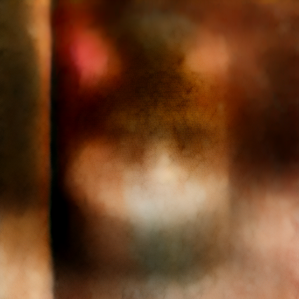

Latent space diffusion is an intriguing concept in the field of artificial intelligence and machine learning. In the realm of deep learning, it refers to the process of mapping high-dimensional data into a lower-dimensional latent space, often using techniques like Variational Autoencoders (VAEs) or Generative Adversarial Networks (GANs). This powerful approach enables the modeling and manipulation of complex data distributions. In latent space, patterns, and features that are otherwise hidden in the original data become more apparent and structured. Researchers have been using latent space diffusion for a variety of applications, from generating realistic images to performing data denoising and dimensionality reduction. The ability to traverse the latent space smoothly also facilitates tasks such as image interpolation and style transfer. Latent space diffusion is at the forefront of cutting-edge AI research, pushing the boundaries of what's possible in data representation and manipulation.
